Как устроены дома, дворы, мастерские и пристань в модели летописного Гомия XII – середины XIII в. и на каких данных это держится. Схемы и цифры собраны автоматически из той же раскладки, по которой строится 3D-сцена (s08_schemes.py), поэтому они совпадают с моделью. Факты раскопок взяты из монографии О. А. Макушникова «Гомельское Поднепровье в V – середине XIII вв.» (2009, [П]) и его статей в энциклопедии «Археалогія Беларусі» (т. 1, 2009, [АБЭ-1]); иллюстрации книги здесь не воспроизводятся. Всё, что помечено «Г», — наша гипотеза.
[П] — Макушников 2009; [Г] — Макушников, «Гомель с древнейших времён до конца XVIII века» (2002); [АБЭ-1] — «Археалогія Беларусі. Энцыклапедыя», т. 1 (2009); [ГБ-1] — «Гісторыя Беларусі», т. 1; R3 — наш разбор вопросов о посаде, торге и пристани. Ф — факт раскопок или документа, В — вывод автора, Г — гипотеза.
Схемы
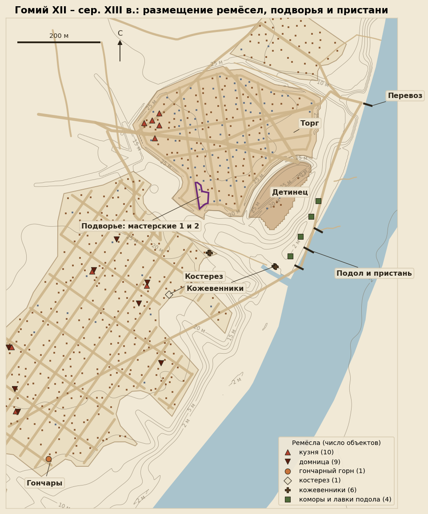
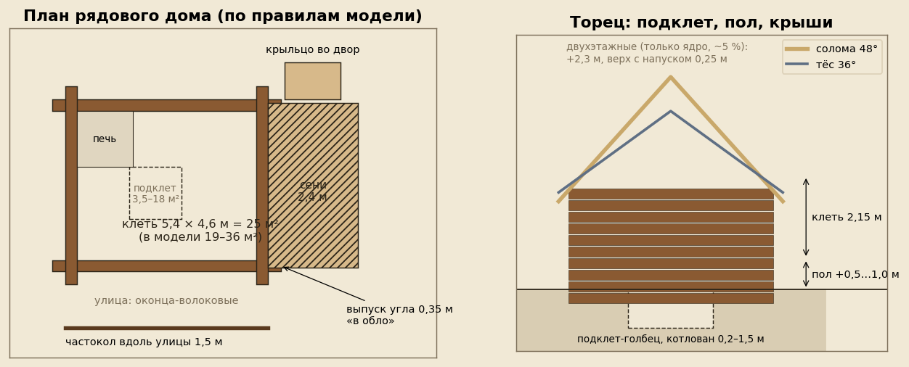
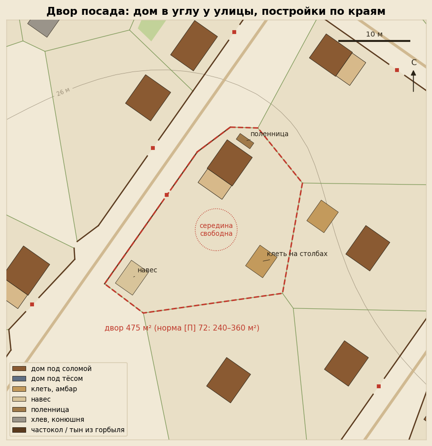
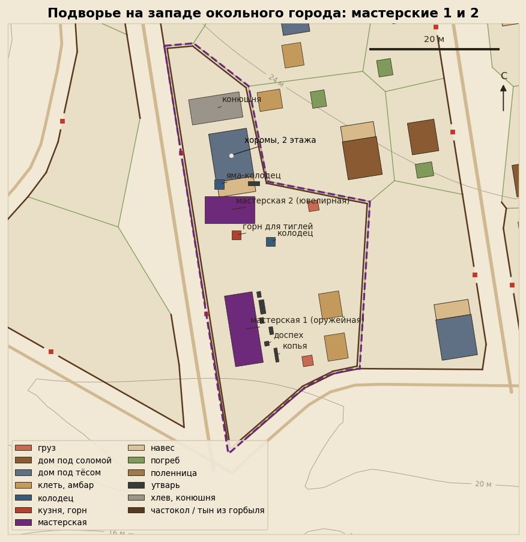
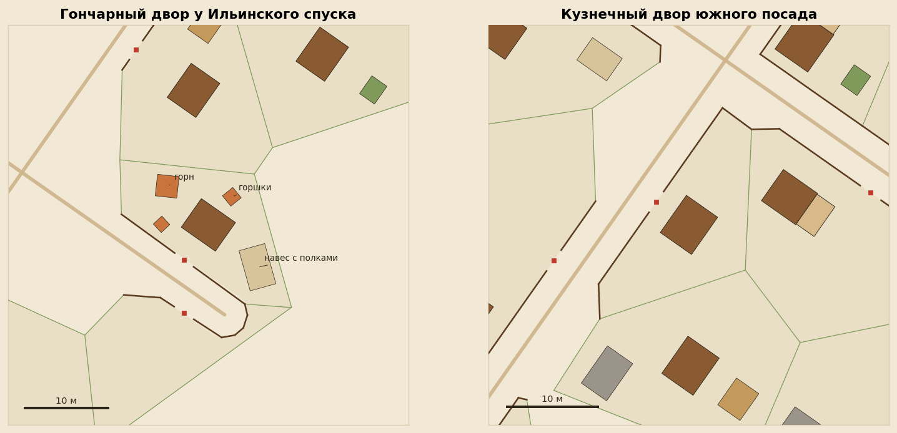
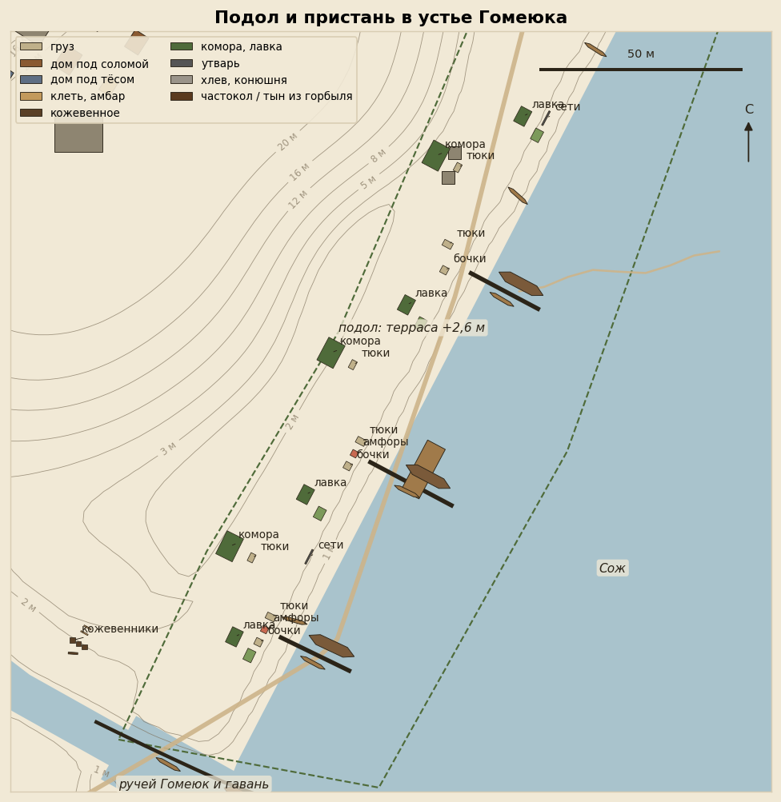
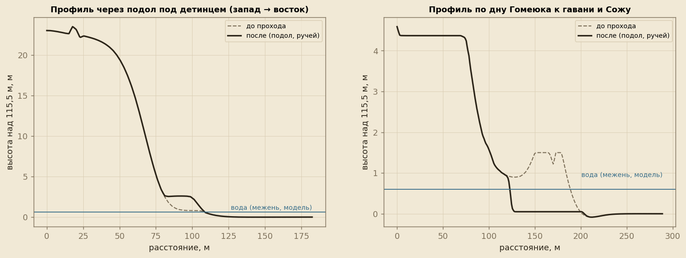
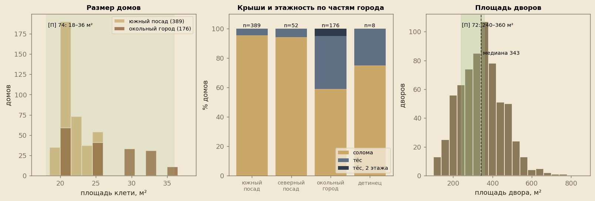
Расчёты
Цифры посчитаны по текущей раскладке модели и сверены с данными раскопок.
| Показатель | В модели | С чем сверяли |
|---|---|---|
| Жилых домов | 625 | раскладка s03 (дворы-ячейки около 19 м) |
| Площадь клети рядового дома | 19.3–35.8 м² (хоромы подворья 7,6 × 6 м = 45,6 м²) | [П] 74: 18–36 м² |
| Дома с сенями | 166 (27 %) | задумано 55 %, остальные не помещаются во двор |
| Дворов | 653 | |
| Площадь двора, медиана | 343 м² (половина дворов 263–416 м²) | [П] 72: 240–360 м² |
| Дворов в диапазоне 240–360 м² | 42 % | |
| Тёс в окольном городе | 72 из 176 (41 %) | R3 в. 14: 30–50 % (аналоги) |
| Двухэтажные в окольном городе | 9 (5 %) | R3: около 5 %, только ядро |
| Солома на южном посаде | 95 % | Вщиж: дома «крытые соломой» |
| Хозпостройки | клетей 265, хлевов 108, навесов 92, погребов 105 | [Г] 43; [П] 73 |
| Частокол вдоль улиц / межевой тын из горбыля | 11.4 км / 25.5 км, ворот 481 | [П] 70, 72, 73; [АБЭ-1] 252 |
| Кузни / домницы | 10 / 9 (у оружейной горна нет, очаг) | [П] 72, 99, 110–111 |
| Гончарные горны | 1 (мастерская с трезубцем — XI – нач. XII в.) | [П] 70–71, 103 |
| Пустые дворы у Ильинского спуска | 33 (огороды; следов пожара 1239 г. нет) | [П] 71 |
| Подворье с мастерскими | 1096 м² | [П] 66, 71, 112 |
| Пристань | мостков 3, судов 17 (насадов 4), комор 4, лавок 4 | R3 в. 11 |
| Вес модели | GLB 32.9 МБ сырого, на сайте около 4,7 МБ (meshopt) | предел 8 МБ |
Кадры
Рендеры Blender текущей модели после правок по сверке с источниками, 07.11.2026. Нажмите, чтобы открыть крупно.

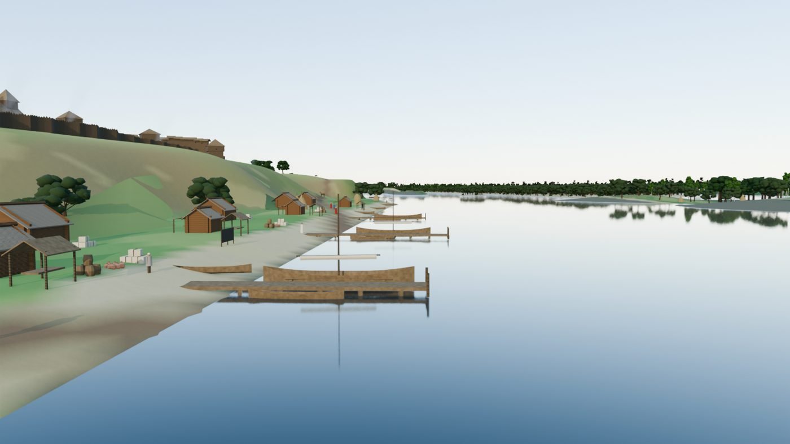
Подол и пристань
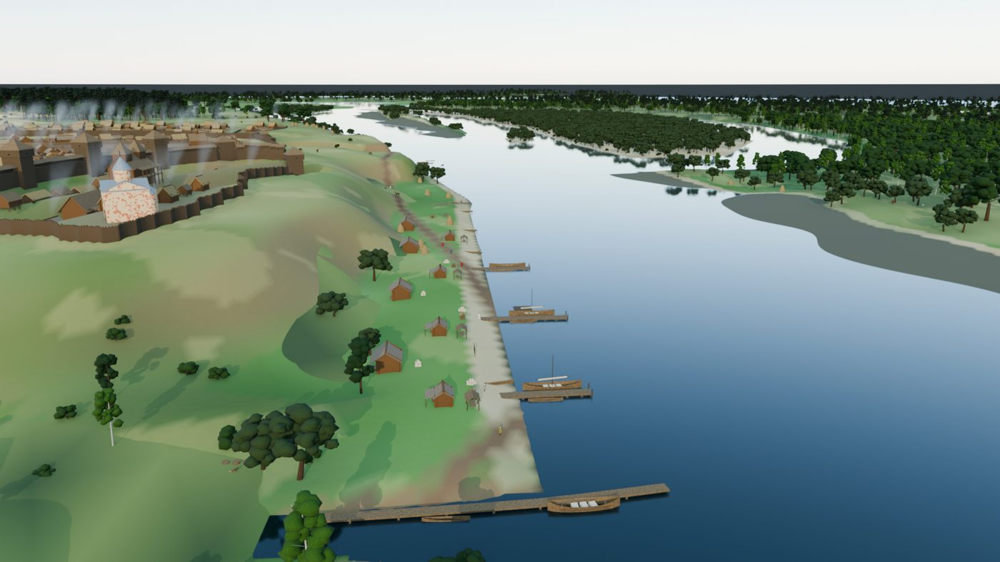
Пристань с высоты
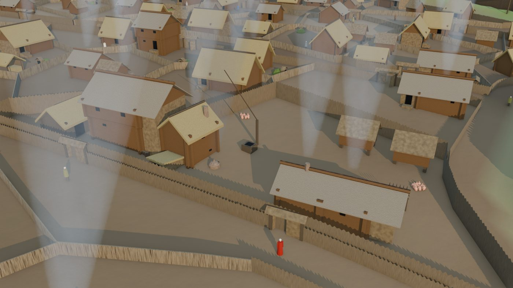
Подворье
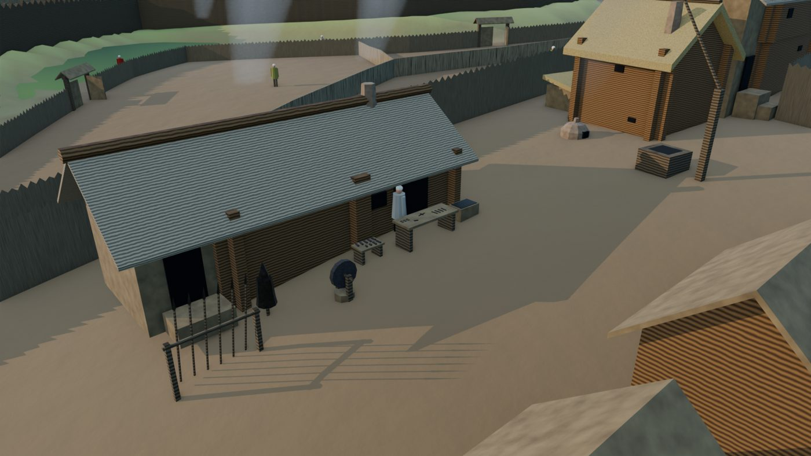
Оружейная мастерская
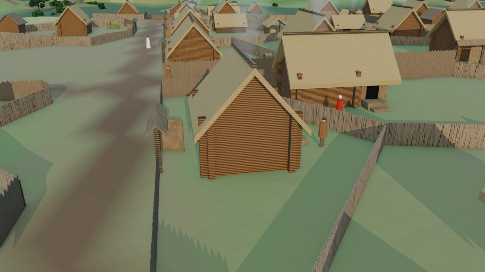
Кузня во дворе
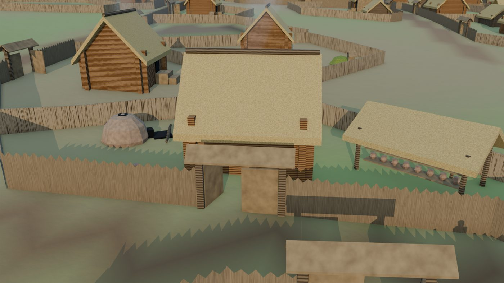
Гончары
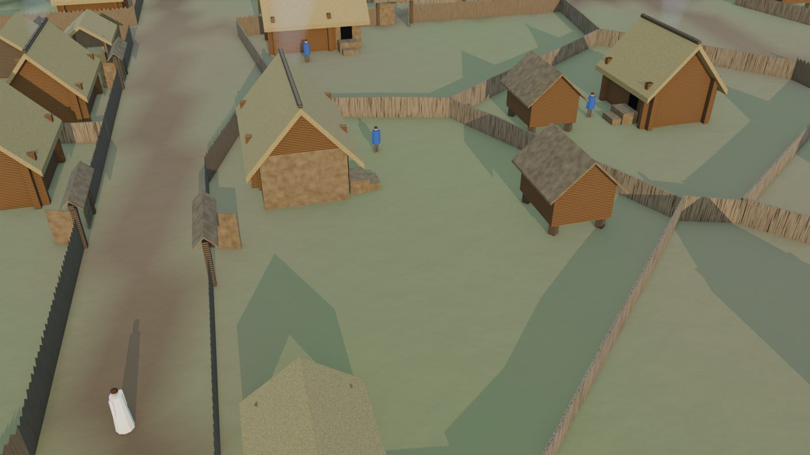
Двор посадаИсточники и уверенность
таблицаЧто сделано в модели, на что опирается и насколько уверенно. Полная версия ведётся в заметках проекта (notes/BOOK_TO_MODEL.md).
Все 3D-модели построены процедурно в Blender (s04_blender_scene.py, класс MB). Сторонние модели не скачивались. Иллюстрации книг Макушникова не использовались.
Сокращения: [АНБ-93] — «Археалогія і нумізматыка Беларусі» (1993); [АБ-3] — «Археалогія Беларусі», т. 3; [АКР-Бр] — «Археологическая карта России. Брянская обл.»; [ДР-85] — «Древняя Русь. Город, замок, село» (1985). Подробно о них в R3.
Дома и дворы
| Что сделано | Источник / аналог | Ув. |
|---|---|---|
| Дом — наземный сруб 19–36 м² (4,6 × 4,2 … 6,4 × 5,6 м). На посадах дома меньше, в окольном городе больше | [П] 74: пятна 18–36 м² над котлованами | Ф/В |
| Пол поднят на 0,5–1,0 м над подклетом. Крыльцо во двор с площадкой и ступенью | [П] 74–75: печи рухнули сверху, значит, жили наверху; объект 44 «двухъярусный» | В |
| Рубка «в обло» с выпусками углов 0,35 м, каждая стена выходит за угол | [П] 75: объект 38, выступы углов 0,3–0,4 м | Ф |
| Сени из досок у торца, около 26 % домов (173 из 658). Задумано 55 %; где сени не помещаются во двор, дом стоит без них | R3 в. 14: сени 2–3 м; [АНБ-93] 177–178: ганок-сени у оружейной | Г |
| Дом в углу двора, у уличной ограды: 2/3 длинной стороной вдоль улицы, 1/3 торцом. Дверь во двор, оконца-волоковые на улицу | [П] 72: жилая выемка в углу двора А; Киев, Полоцк — по оси улицы ([ДР-85]) | В/Г |
| Крыши: на посадах солома 95–96 %, в окольном городе тёс 41 % (72 из 176), в детинце тёс у 2 из 8 дружинных домов, у терема и гридницы. Солома круче (48°), с коньковой жердью. Тёс положе (36°), с охлупнем | Вщиж: дома челяди «крытые соломой» ([АКР-Бр] 85); тёс — у богатых домов ([ДР-85] 141, 148) | Г (по аналогам) |
| Двухэтажные дома только в ядре: 9 в окольном городе (5 %), хоромы на подворье, в детинце — терем. Верхний ярус с напуском 0,25 м, под тёсом | [Г] 43: «срубный дом в 1–2 этажа»; [ДР-85] 142: двухэтажные известны в Любече | Г |
| Дворы — ячейки около 19 м, медиана 343 м² (четверть дворов меньше 263 м², четверть больше 416 м²). Постройки ставятся по краям, середина двора свободна | [П] 72: дворы 240–360 м², двор Г около 360 м² | Ф |
| Хозпостройки по периметру: клеть на столбах (275), хлев (115), навес-повéть (95), погреб под дерновой насыпью (110). Огород в глубине двора на посадах | [Г] 43: сараи, амбары, погреба; [П] 73: ямы-погреба во дворах | В/Г |
| Уличная ограда — частокол 1,5 м с воротами (два столба, перекладина, двускатная накрышка, створки). Между дворами плетень на кольях 1,15 м, общая граница рисуется один раз | [П] 70: улица с частоколом на южном посаде; [П] 70, 73: канавки оград 0,1–0,3 м с ямками от кольев | Ф (частокол, канавки) / Г (высота) |
| Переулки на южном посаде: продольные через 46 м, поперечные через 95 м, ширина 3,5 м. Раньше на 30 га была одна улица, и большинство дворов не выходило на улицу | R3 в. 13: переулки 3–3,5 м (Киев, Слоним) | Г (сетка) |
Ремёсла
| Что сделано | Источник / аналог | Ув. |
|---|---|---|
| Княжье подворье около 1100 м² на западе окольного города, у северной бровки Гомеюка. Высокий частокол 2,5 м и одни ворота на улицу. Внутри двухэтажные хоромы 7,6 × 6 м, конюшня, две клети, колодец | [П] 66, 71: феодальная усадьба на левом борту Гомеюка; [П] 112: мастерские 1 и 2, вероятно, на княжеском подворье | В (место) / Г (облик) |
| Мастерская 1, оружейная («двор Фёдора»). Сруб 11,4 × 4,4 м: два сруба по 4,4 м (над двумя подклетами) с дощатыми сенями между ними, под тёсом. Западный сруб — мастерская (широкая дверь, ставень к горну), восточный — жилой | [П] 110, 139: два подклета, в мастерской больше 1600 предметов и около 1500 панцирных пластин, сгорела около 1239 г.; [АНБ-93] 177–178: сруб 4,4 × 4,2 м, подклет углублён на 0,9–1 м, ганок-сени | Ф (план, назначение) / Г (вид выше земли) |
| У оружейной открытый навес с горном, мехами и вытяжкой. Рядом наковальня на чурбаке, кадь для закалки, точило, пластинчатый доспех на стойке, стойка с копьями, куча угля | Утварь по находкам (пластины, оружие); навес и расстановка — Г | Г |
| Мастерская 2, ювелирно-литейная. Сруб 4,8 × 4,2 м с низким дощатым тамбуром-входом на запад, общая длина 7,8 м. Дымоход над южным углом. Рядом горн для тиглей, яма-колодец в срубе, верстак | [П] 102, 112, 136–137: пятно 7,8 × 4,2 м, камера 4,8 × 4,2 м, тамбур с запада, печь в южном углу, яма с сотнями обломков браслетов | Ф (размеры, тамбур) / Г (крыша, горн во дворе) |
| Кузни во дворах: 5 в окольном городе у западных ворот, 5 на южном посаде. Открытый навес на столбах с задней и боковой стенками, горн с вытяжкой, мехи, верстак с инструментом. Перед навесом наковальня, кадь и уголь | [П] 99: шлак и стенки домниц во всех частях города; на окольном городе (кон. IX–X вв.) и на южном посаде (XI–XII вв.) особенно много | Ф (наличие) / Г (облик, число) |
| Сыродутные горны (домницы), 9 шт.: глиняная шахта 1,9 м, сопло с мехами, яма для шлака, кучи болотной руды и шлака. Стоят в кузнечных дворах посада и в отдельных дворах «типа Д» | [П] 72: на внутреннем дворике усадьбы Д много шлака; [П] 99 | Ф (шлак) / Г (форма) |
| Гончары, 2 двора на южной окраине южного посада у Ильинского спуска. 4 купольных горна с топочной ямой, навесы с полками сохнущих горшков и гончарным кругом, глина, готовые горшки, брак | [П] 103: гончарная мастерская на южном посаде (объект 10), горшок-брак с трезубцем; гончарство на окраинах, у воды | Ф (место) / Г (тип горна) |
| Костерез, 1 двор на южном посаде: навес с верстаком, заготовки, куча опиленных рогов | [П] 98: скопление опиленных рогов в углублённой части постройки XII–XIII вв. на посаде | Ф (наличие) / Г (облик) |
| Кожевенники: у ручья Гомеюк выше гавани и один двор на южном посаде у Гомеюка. Чаны-зольники, рамы с натянутыми кожами, мездрильная колода | [П] 72: в устье Гомеюка в мокром слое щепа, обработанное дерево и кожа (1986) | В (связь с находкой) / Г |
Река, пристань, подол
| Что сделано | Источник / аналог | Ув. |
|---|---|---|
Подол — низкая терраса под мысом: от устья Гомеюка на север, около 270 м, полоса до 45 м. Поднята до +2,6 м (около 2 м над водой), у воды песчаный пляж 0–10 м (s02_terrain_v2.py, site.podol_zone) | R3 в. 11: «третий посад» на низкой террасе; [П] 72–73: керамика IX–XIII вв. на отмели; терраса частично смыта | Ф/В (подол) / Г (ширина и высота) |
Ручей Гомеюк в нижних ~150 м. В устье расширяется до гавани около 17 м (site.creek). На северном берегу дощатая набережная на сваях, у неё насад и долблёнка | [Г] 171: в XVII в. пристань и паром, «возможно, в устье Гомеюка»; сейчас ручей в трубе | Г |
| Основная пристань: трое мостков на сваях, 16–20 м в реку, с причальными столбами. У каждого насад (12,5 м, нашивные борта, у двух мачта с рейком и свёрнутым парусом) и долблёнка; 6 долблёнок вытащены на пляж; плот из брёвен на якоре | R3 в. 11: однодеревки и набойные лодки 6–12 м, мостки на сваях, без каменных набережных; [Гомель-1911]: по Сожу ходили барки, дубки, лодки, плоты | В (типы судов) / Г (число и место) |
| 4 коморы-склада 6,4 × 4,6 м в глубине террасы: сруб, широкая дверь, тёс с глубоким свесом. 4 лавки 4,2 × 3 м с прилавком и навесом к пристани, при них лотки. Без толп: 3 лодочника и 2 носильщика | R3 в. 10: «малое торжище у причала»; формы построек — Г | Г |
| Грузы: тюки в рогожах, бочки, амфоры-корчаги (красная глина, по 8 в группе, одна лежит), штабель досок, сети на кольях | Южный импорт (амфоры) — обычная находка в городах Руси; для Гомия не проверяли | Г |
| Перевоз остался в устье Киевского спуска: мостки, паром-плот с перилами, 3 долблёнки на воде и 2 на берегу, одна телега. Лавки отсюда убраны | R3 в. 11: переправа по планам XVIII в. и 1838 г. | В (поздние планы) / Г (для XII в.) |
| Пойменная дорога сдвинута на террасу. Путников в воде больше нет: раньше 196 м дороги шли по воде | Исправление модели | — |
Конвейер
- Новый шаг
s03e_crafts.pyзапускается послеs03d_life.pyи доs03c_colors.py. Шаги s03 → s03d → s03e правятlayout.jsonна месте, поэтому их нужно гонять цепочкой:sh city/scripts/run_layout.sh(запускает и s03c). layout.json: новые ключиplots(рамка двора),tyn,yard_gates,court_fence,piers,quay,ferry,raft,crafts(точки для кадров и подписей).s04: домhouse()вместо коробки; новые типы построек в словареCRAFT; материалыtes,tyn,sod,iron,hide,pot,amphora,bone,linen,charcoal,ore,slag,rawclay,net. Новые кадры:court,armory,smithy_yard,pottery,yard,podol,haven_air.- Резервные копии предыдущего состояния:
*.bak-crafts.
Вопросы историкам
Записаны в QUESTIONS_FOR_HISTORIANS.md. Мы их не решали:
- А10 — пристань и переправа;
- А11 — материал крыш;
- А11а — как устроена мастерская 1 выше земли;
- А11б — есть ли амфоры в Гомии.
Четвёртый проход: правки по сверке с источниками
Правки по SOURCES_CHECK.md. Взяты пункты с опорой на факт раскопок (Ф) или на вывод автора (В) со средней или высокой уверенностью. Новые сокращения: [АБЭ-1] — «Археалогія Беларусі. Энцыклапедыя», т. 1 (2009), Paperless 2118, статьи А. А. Макушникова; [ГБ-1] — «Гісторыя Беларусі», т. 1, Paperless 2187. Номера пунктов (D, O, P, R) — из таблицы сверки.
| Что изменено | Источник (документ, стр.) | Ув. |
|---|---|---|
| O3. Мастерская 1 — слесарно-сборочная, не кузница. Убраны навес с горном и мехами, наковальня, кадь и уголь. Внутри западного сруба очаг, дым светлый. Во дворе перед мастерской верстак с напильниками, сверлом и скобелем, стол с брусками, точильный круг, ящик пластин. Доспех на стойке и копья оставлены | [П] 110–111: заготовок и обрубков нет, горна нет, пятно очага с прокалом; бруски (7 целых, около 17 обломков), круг, сверло 29,5 см, напильники. [АБЭ-1] 253 — то же | Ф (состав) / Г (расстановка, очаг внутри) |
| O4. Оба сруба оружейной стоят вплотную (8,8 × 4,4 м), дощатые сени вынесены к восточному торцу (+2,4 м), крыша общая. Раньше сени стояли между срубами, длина 11,4 м. Мастерской остаётся западный сруб | [АБЭ-1] 252–253: два подклета «примыкают друг к другу»; [П] 110: в подклете I мастерская, во II быт | В (план) / Г (какой сруб западный, где сени) |
| O5. Мастерская 2 — двухъярусная клеть: углублённый подклет с тамбуром на запад, над ним ярус с печью. Стены подняты до 3,9 м, наверх ведёт наружная лестница с северной стороны. Дымоход над южным углом остался | [П] 112: в южном углу завал глины от печи, рухнувшей сверху; сгорела | В / Г (лестница, высота) |
| D4. Плинфа храма на детинце неоднородная: жёлтая, около 25 % кирпичей красноватые, пятнами. Только в рендерах Blender, во вьюере цвет общий | [АБЭ-1] 251: около 20 обломков жёлтой и красноватой плинфы | Ф (цвета) / Г (доля, кладка). Вопрос А6 об обмазке открыт |
| P2. Межевые ограды между дворами — тын из горбыля, вкопанного в канавку, высота 1,3 м. Раньше был плетень 1,15 м. Частокол вдоль улиц не менялся | [П] 72: ограды, «горбыли которых вкапывались в канавки»; [АБЭ-1] 252: дворы разделены деревянными заборами; [П] 70, 73: канавки 0,1–0,3 м | Ф (тип) / Г (высота) |
| P3. Гончары у Ильинского спуска: вместо двух дворов с четырьмя горнами оставлен один двор с одним горном. Мастерская с трезубцем старше среза модели | [П] 70–71, 103: мастерская (объект 10) — вторая половина XI – начало XII в., потом перепланировка | Ф (дата) / Г (что один двор дожил) |
| P3. На краю южного посада у Ильинского спуска застройка реже. В полосе 160 м от оврага опустели 33 двора: дома и хозпостройки убраны, на их месте огороды. Ограды оставлены | [П] 71: с середины XII в. бедные усадьбы, в первой половине XIII в. жизнь затухает, следов пожара нет | В / Г (доля около 45 %, ширина полосы) |
| R1. Амфоры добавлены в ядро города: две группы у клетей подворья и одна у терема на детинце. На пристани остались | [П] 108: многие десятки обломков византийских амфор, в основном на детинце и в окольном городе; [Г] 57 (PDF 58): красноглиняные, с вином и маслом | Ф (находки) / Г (места) |
Проверено, правка не нужна
- O1. Вал и ров окольного города «подковой» ([АБЭ-1] 251): в модели линия рва выгнута наружу, до 47 м от хорды между Киевским спуском и Гомеюком. Размеры рва — по-прежнему гипотеза (А1).
- D2, D3, O2, O7, P1, P4, P6, P8 совпадают с моделью.
Переключатель (по решению Павла)
- D1. Внутренний поперечный ров детинца, конец XII в. ([ГБ-1] 208: детинец разделён на две части по 0,7 га). Включается
GOMIY_INNER_DITCH=1передs00, по умолчанию выключен. Линия поперёк длинной оси делит контур детинца на две равные части (по 0,64 га). Ров 20 м поверху, 5 м глубиной, дно 4 м; глубина считается от текущей поверхности детинца. Через ров мостик на дороге от ворот. Княжий двор (терем, гридница, колодец) сдвинут в южную половину, к храму. Всё это Г: ответа на А4 нет. Кадр для сравнения:renders/compare_inner_ditch.jpg. - В штатном рельефе на этой линии уже есть понижение около 7–9 м от бровки (из DEM), ров ложится в него.
Не делали
- D5 (дата храма: при Давиде [Г] 52 или середина XII в. [ГБ-1] 208): на модель не влияет, обе даты записаны.
- P5 (ров на Пролетарской): трасса неизвестна, уверенность низкая.
- P7 (смолокурные ямы): XI в., для среза XII–XIII вв. не нужны.
- O6 ([ГБ-1]: мастерская на детинце): раскопочные тексты [П] и [АБЭ-1] надёжнее.
- K1 (Любенский могильник, 60 курганов): дальний план ещё не построен.
Конвейер
s03e_crafts.py: новый шаг 0 «редкий край посада»; один гончарный двор; оружейная без горна; амфоры подворья и детинца. ВL["crafts"]добавленыsparse_edgeиamphorae_detinets.s00_site_def_v2.py,s02_terrain_v2.py,s03_layout_v2.py: переключательGOMIY_INNER_DITCH(ровdetinets_innerвsite_v2.json, мостик с флагомinner, сдвиг княжьего двора).s04_blender_scene.py: новые типыwhetstonesиplate_crate, у верстака флагarmorer; переписаныarmoryиjeweler; материалыgorbyl(межевые ограды) и плинфа с красноватыми пятнами.- Резервные копии предыдущего состояния:
*.bak-sources. Рендеры «до» лежат вrenders/before_sources/.
Реконструкция и 3D-модель: Pavel Novikau, 2026. Все 3D-модели построены процедурно в Blender по описаниям; сторонних моделей нет.